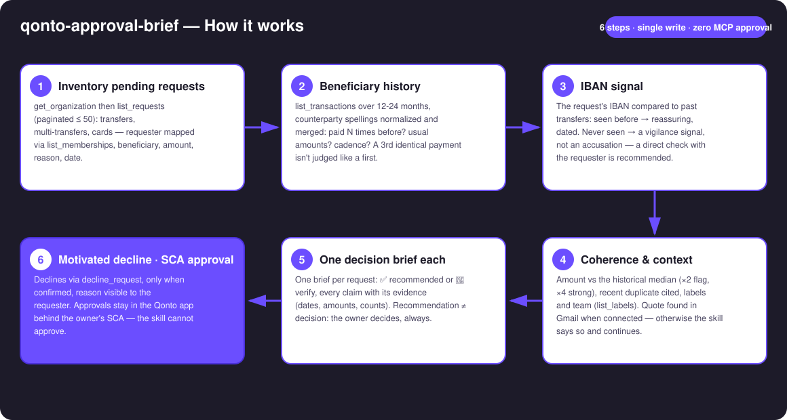
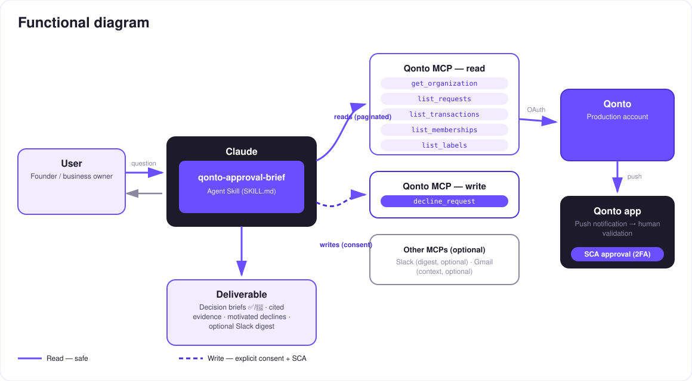

Instruct every team request like a CFO — only you approve, in the app, behind SCA.
Team transfer and card requests pile up in Qonto — and the owner approves half-blind, or three days late. Every request deserves five minutes of digging; nobody has them. The skill does a CFO's instruction work on every pending request:
Paid N times before? Usual amounts? Cadence? A 3rd identical payment isn't judged like a first-ever transfer.
Seen before in the account's history (reassuring, dated) or never seen — a vigilance signal, not an accusation.
Amount vs habit (×4 → strong flag), budget/label fit, the quote found in Gmail when that MCP is connected.
✅ recommended / 🔶 verify, every claim sourced — motivated declines via MCP (confirmed), approvals in the app with your own 2FA.
Sample brief lines (invented): "✅ recommended: 3rd identical payment to this provider" · "🔶 verify: never-seen IBAN, amount ×4 the usual". Monday morning is exactly when the weekend's request pile is waiting.
| Prerequisite | Detail | Required |
|---|---|---|
| Qonto production account | Adapts to any organization — get_organization first, nothing hardcoded | ✅ |
| Country | Universal — the instruction relies on the account's own history, not national rules; every Qonto country (FR, DE, ES, IT…) | ℹ️ detected |
| Qonto MCP connected | Official connector (claude.ai / Claude Desktop), OAuth login | ✅ |
| A role that reviews requests | Owner/Admin/Manager: pending requests must be visible — otherwise list_requests comes back empty and the skill says which case it is | ✅ |
| Pending requests | Otherwise nothing to instruct — the skill says so and stops cleanly | ⭕ |
| A few months of history | Below that, every payee looks "new" — degradation announced | ⭕ |
| Slack · Gmail (optional MCPs) | Digest and email context — detected dynamically, never required | ⭕ |

list_requests because of the role? → announced as a visibility issue, never "all clear"
The security model, not a limitation: reads are risk-free; the only write is a motivated decline, confirmed in the conversation. Approval doesn't exist in this skill — approve_request is never called. Approving = the Qonto app + your own SCA (2FA). Nothing this skill does can move a euro.
| Signal | How it's checked | Reading |
|---|---|---|
| Known beneficiary | list_transactions over 12-24 months, spellings normalized: N payments, amounts, cadence | ✅ reassuring when stable and dated |
| Never-seen IBAN | Compared to IBANs in past outgoing transfers | 🔶 vigilance, not accusation — a new supplier is normal, once |
| Unusual amount | Ratio vs the same beneficiary's historical median | 🔶 ×2 flagged, ×4 strong flag, both numbers shown |
| Possible duplicate | Same beneficiary + same amount paid in the last ~10 days | 🔶 transaction cited (date, amount) |
| Budget/label coherence | list_labels + the requester's team | ℹ️ soft signal, never decisive alone |
| Email context | Quote/thread found in Gmail (when that MCP is connected) | ℹ️ cited in the brief (subject, date) |
| Card request | No IBAN: requested limits vs the team's usual card spend | ℹ️ instruction adapted |
| Output | Format | When |
|---|---|---|
| Conversation reply | Brief table + one expanded brief per 🔶 request + the explicit next step | Always — the baseline |
| Brief board | HTML file/artifact: one card per request, verdict and evidence | When the host renders files (claude.ai artifacts, Claude Desktop, Claude Code); automatic fallback to tables otherwise |
| Decline reason | Text attached to the decline via decline_request, visible to the requester in Qonto | Every decline (confirmed) |
| Slack digest | Brief summary posted to the channel of your choice | When a Slack MCP is connected (optional) |
The ≤ 3-minute demo attached to the PR walks through: the request pile → the sourced briefs → the dubious request (never-seen IBAN, ×4 the usual) declined in one word → the approvals in the Qonto app, behind SCA, filmed on a phone → wrap-up. All demo requests are invented. The detailed shooting script is kept internal (outside the repo).
| Idea | Effort | Note |
|---|---|---|
| Learned approval policy (per-category/label thresholds) | Medium | Briefs become "within / outside policy" |
Supplier-invoice matching (list_supplier_invoices) | Low | A request backed by its invoice is one more cited proof |
| Scheduled daily Slack digest | Low | Optional multi-MCP, detected dynamically |
| Memory of past verifications | Medium | An IBAN checked once with the requester becomes "known" |
Companion skills: qonto-fraud-sentinel (watches past transactions; this skill instructs future requests) · qonto-reimburse-batch (creates grouped requests — this skill then instructs them).
approve_request is not used — approving = the Qonto app + your own SCAdecline_request requires request_type: "multi_transfers" (plural) · invented examples labelled as such